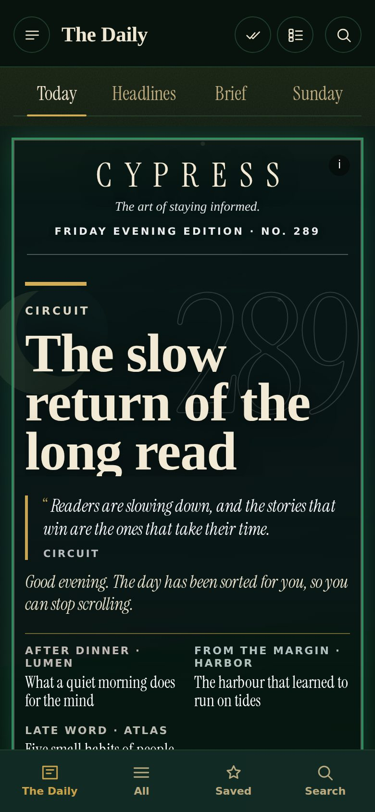
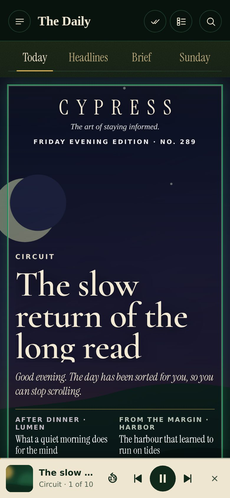
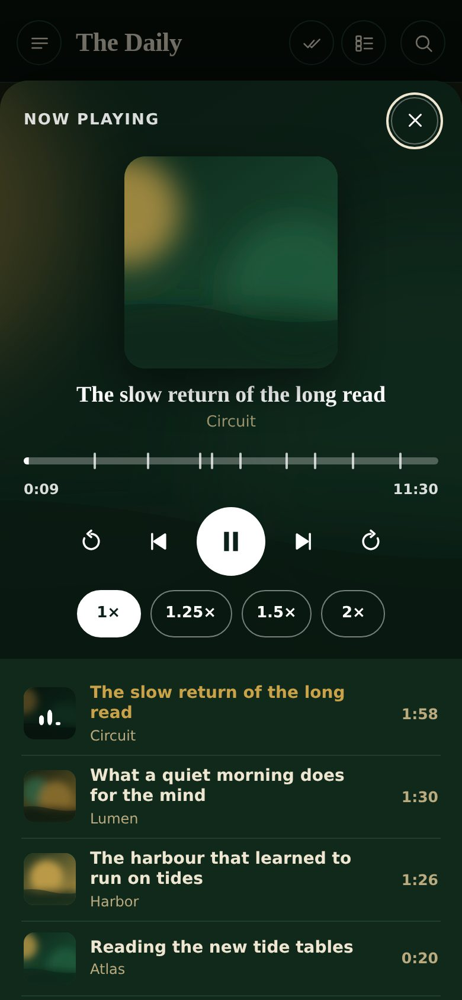
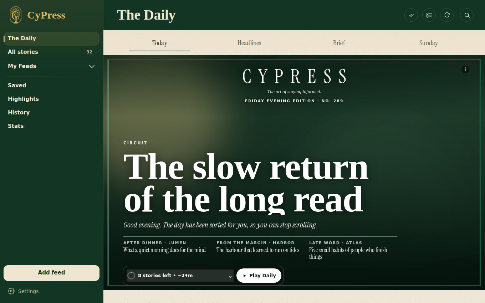
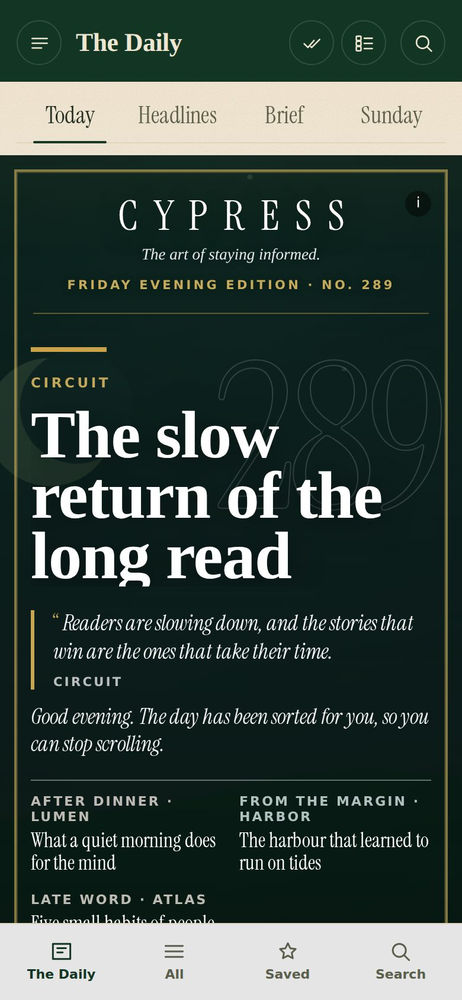
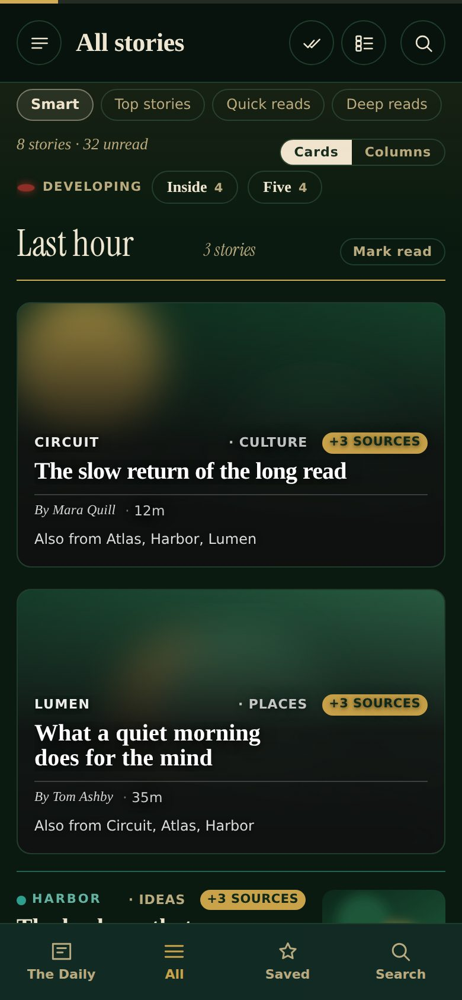

CyPress Reader
News, laid out like a magazine.
Add the sites you follow and CyPress Reader gathers them into one front page: big photos, clear headlines, and an ending, so you can read, finish, and get on with your day.
On iPhone or iPad, add it to your Home Screen in three steps.

Sample stories, invented for this demo. Not real news. Tap to try it.
Also made for tablets and foldables. See the tablet layout, live
Pick your sites. We do the layout.
CyPress Reader is a news reader. You choose where the news comes from, and it turns those sites into something you can sit down with.
- No. I
Add the sites you like
Search by name or paste an address. There is a ready-made catalogue to start from.
- No. II
Read your front page
The Daily gathers today’s stories from every site into one magazine-style page, with the biggest story at the top.
- No. III
Get to the end
Once you have caught up, CyPress Reader says so. There is no endless scroll to get lost in.
Let the news read to you.
Tap Play Daily and CyPress Reader reads the day’s stories one after another, like a podcast, using the voices built into your phone. On Android it keeps playing with the screen off, and you can pause or skip from your lock screen or your Bluetooth buttons.


Four things, done properly.
A real front page
Big photos, real headlines, and a layout that changes with the news and with your screen.
A clear ending
Catch up and you are told you are done. The news stops when you are finished with it.
Make it yours
Dozens of themes, each with a light and a dark version, and a choice of cover styles for The Daily.
Stays on your device
Your sites, settings and saved stories live on your phone. You do not need an account to start reading.
A front page, not a list of links.
The layout adapts to your screen, from a phone to a laptop.



Sample stories and pictures. Highlights and notes, saved stories, reading history and offline reading for stories you have already loaded are all built in.
Get CyPress Reader
On Android you install the app directly. On iPhone and iPad it runs from Safari, and installs to your Home Screen in about 20 seconds.
Android
Download the app file directly. It takes three taps.
- 1Tap the button below.Your phone downloads a file called cypress.apk. It is the app itself, and it is not from the Play Store.
- 2Open the file.If Android asks, allow your browser to install apps from this source. If Play Protect offers to scan the app, choose Scan app. That is normal for apps outside the Play Store.
- 3Tap Install, then open CyPress Reader.
On a computer? Open CyPress Reader in your browser. Nothing to install.
On a computer? Scan this with your phone to open CyPress Reader on it.
iPhone and iPad
There is no App Store download. CyPress Reader is a web app: add it to your Home Screen once and it opens full-screen like any other app.
- 1Open this page in Safari.Use Safari itself, not an in-app browser. Go to cypressreader.com/app.
- 2Tap the Share button.The square with an arrow pointing up, in Safari’s bar.
- 3Choose “Add to Home Screen”.Scroll down until you see it (tap “View More” if needed), then tap Add.
Done. Open CyPress Reader from the new icon on your Home Screen. Your sites and settings stay on your phone. Read-aloud may pause when you lock the screen, because iOS limits web apps; the Android app does not have that limit.
Good to know.
Do I need an account?
No. Open CyPress Reader and start adding sites. There is nothing to sign up for.
Where is my data?
Your sites, settings and saved stories stay on your own device. CyPress Reader has no server that stores them. One thing to know: in the web version, when CyPress Reader loads a site’s news feed or a full article, the request may pass through a relay service so the browser is allowed to read it. The Android app fetches directly, and in Settings you can point the web version at a relay of your own. The privacy page lists every service it can talk to.
Why isn’t it in an app store?
On iPhone it is a web app, so you add it from Safari instead (steps above). On Android you install the app file directly.
Does it work offline?
Stories you have already loaded can be read again without a connection. New stories need the internet.
Can I add any website?
Almost any website. Search by name or paste the address, and CyPress Reader finds its news feed.
I don’t see “Add to Home Screen”
Make sure you are in Safari itself, not an app’s built-in browser. Tap Share, scroll to the bottom of the sheet and tap “View More” or “Edit Actions” if the row is hidden.
News apps are built to keep you scrolling. I wanted one that lets you read, and then lets you stop.
You choose the sites. CyPress Reader lays them out like a magazine, reads them aloud when your hands are busy, and keeps everything on your device. It is still early, and I would like to hear what is missing. You can leave feedback through the Support link below.
CyFounder, CyPress Reader
Start reading, slowly.
Pick your sites. CyPress Reader does the layout.